请访问原文链接：如何在 Mac 和虚拟机上安装 macOS Big Sur 11 正式版，查看最新版。转载请保留出处。
作者：gc(at)sysin.org，主页：www.sysin.org
macfz：请停止抄袭！
2020.11.17 更新：增加配备 Apple T2 安全芯片的 Mac 额外操作步骤。
本文适用以下场景：
Mac 上全新安装 macOS Big Sur（在官方兼容列表中的硬件）
如果 Mac 不在官方兼容性列表，请参看：在不受支持的 Mac 上安装 macOS Big Sur 11.0 正式版
在线升级不在讨论范畴，补丁加补丁……
在 ESXi、Windows 和 macOS 中安装 macOS Big Sur 虚机
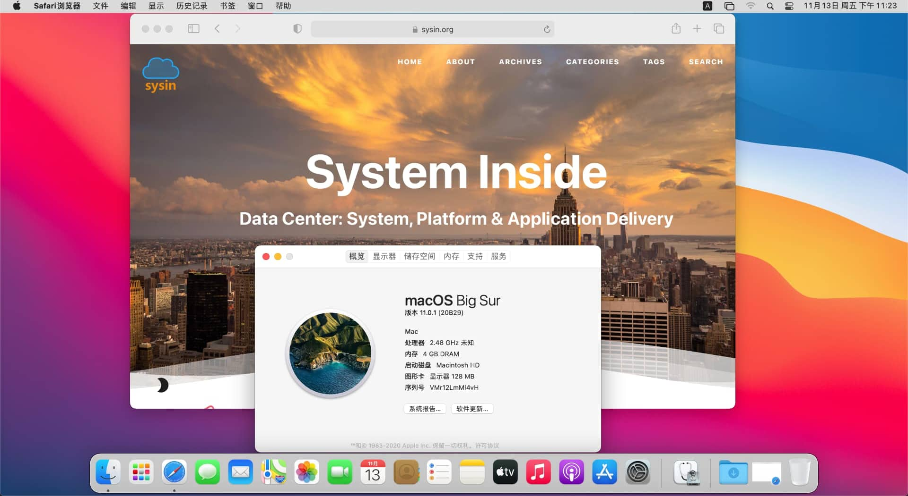
1. 获取 macOS Big Sur 正式版软件包
Mac App Store
https://apps.apple.com/us/app/macos-big-sur/id1526878132?mt=12
或者打开 App Store 直接搜索 macOS （或者 Big Sur）下载即可。
百度网盘镜像
上述两种方式，都会将 Install macOS Big Sur.app 放置于 /Applications （应用程序）下面。
可启动 ISO 镜像，可用于虚拟安装
2. 了解 macOS Big Sur 兼容设备
- MacBook 2015 and later Learn more
- MacBook Air 2013 and later Learn more
- MacBook Pro Late 2013 and later Learn more
- Mac mini 2014 and later Learn more
- iMac 2014 and later Learn more
- iMac Pro 2017 and later (all models)
- Mac Pro 2013 and later Learn more
如果您的 Mac 不在兼容性列表请参看这里：在不受支持的 Mac 上安装 macOS Big Sur 11.0 正式版
3. 安装方式：在当前系统下全新安装
（1）一般步骤
1) 确保已经下载好 Install macOS Big Sur.app 并放置于 /Applications （应用程序）下
2）在当前系统中全新安装，打开“磁盘工具”，新建一个大约 16G 的 “macOS 扩展（日志式）”分区（非 APFS 卷），命名为 Install，执行命令写入：
1 | sudo /Applications/Install\ macOS\ Big\ Sur.app/Contents/Resources/createinstallmedia --volume /Volumes/Install |
创建完毕后，卷名称自动修改为 Install macOS Big Sur
3）打开“系统偏好设置…” > “启动磁盘”，选择上述分区（Install macOS Big Sur），重新启动，进入 macOS 安装画面
如果不支持切换启动磁盘，重新启动，按住 Option 键，出现启动选择画面，选择“Install macOS Big Sur”图标，进入安装画面
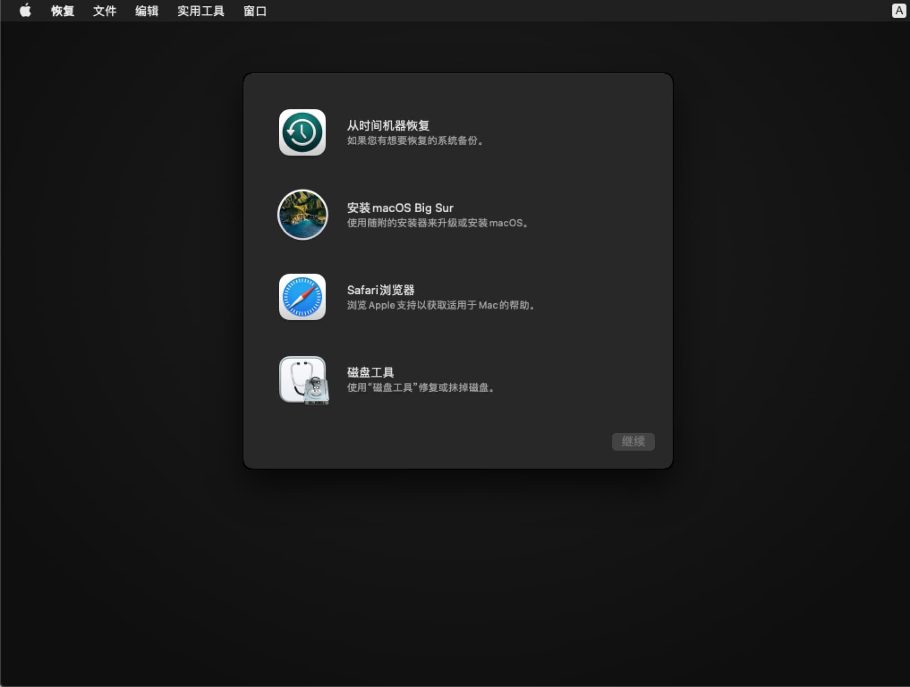
4）选择磁盘工具，抹掉原有卷（默认名称：Macintosh HD，格式：APFS）即可全新安装
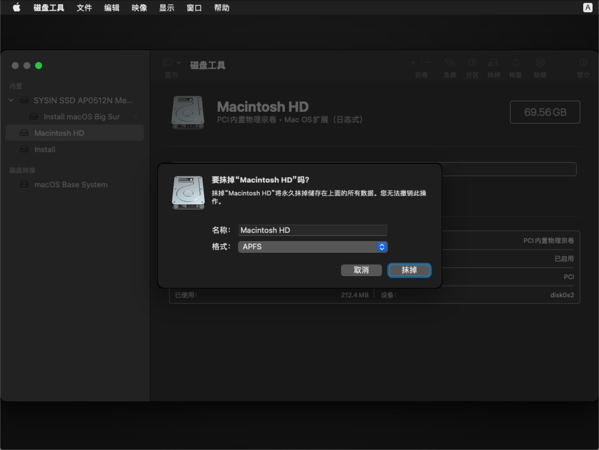
5）关闭磁盘工具，选择“安装 macOS Big Sur”，根据提示多次点击下一步即可完成安装
（2）配备 Apple T2 安全芯片的电脑可能需要额外的操作
下列 Mac 电脑配备了 Apple T2 安全芯片：
- 2020 年推出的 iMac
- iMac Pro
- 2019 年推出的 Mac Pro
- 2018 年推出的 Mac mini
- 2018 年或之后推出的 MacBook Air
- 2018 年或之后推出的 MacBook Pro
您也可以通过“系统信息”来了解您的 Mac 有没有配备这款芯片：
- 在按住 Option 键的同时，选取苹果 () 菜单 >“系统信息”。
- 在边栏中，选择“控制器”或“iBridge”，具体取决于所使用的 macOS 版本。
- 如果您在右侧看到“Apple T2 芯片”，即表示您的 Mac 配备 Apple T2 安全芯片。
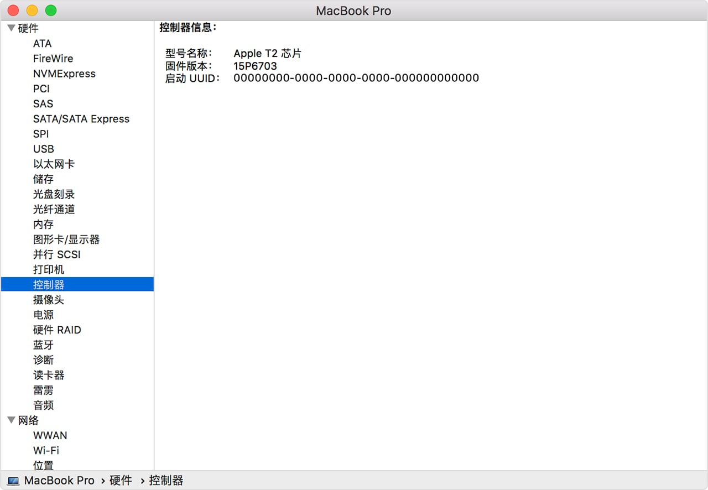
在配备 Apple T2 安全芯片的 Mac 启动“Install macOS Big Sur”，可能报错：“需要更新软件才能使用这个启动磁盘。”
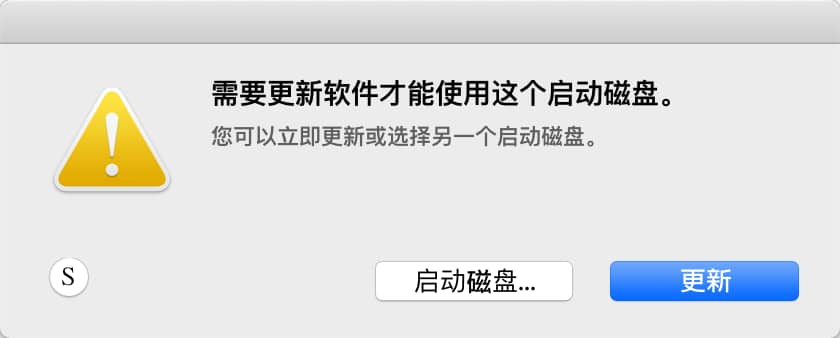
此时需要，连接网络（点击右上角的 Wi-Fi 图标联网）后，点击“更新”按钮，等待软件更新，更新完毕自动重启。
可能出现”安装更新时出错。”的提示，确保网络访问正常，点击“再试一次”（因网络访问原因，可能需要多次重试）。
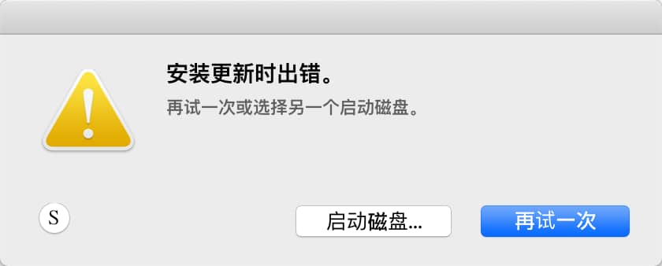
重启后再次启动“Install macOS Big Sur”，可能仍然报错如下，确保已经联网，点击“再试一次”。
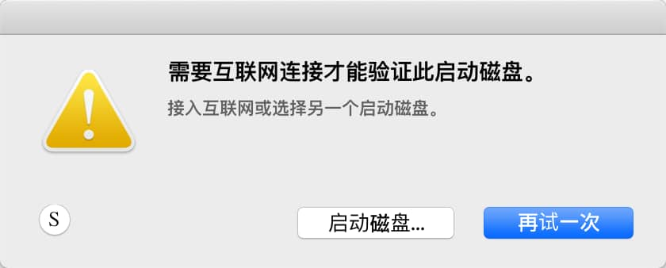
按提示重启后，当系统要求您进行身份验证时，点按管理员账号，输入密码，正常进入安装画面。
4. 安装方式：使用移动存储介质全新安装
（1）一般步骤
提示：U 盘也可以使用移动硬盘替代，特别是 SSD 移动硬盘，速度更快。
1）创建启动 U 盘
准备一个 16G 或者以上的 U 盘，打开“实用工具 > 磁盘工具”，选择 U 盘，点击“抹掉”，格式如下：
Mac OS X 扩展（日志式）；
GUID 分区图；
分区名称：sysin（默认为 Untitled，可以自定义，注意下面终端命令中的 sysin 也要改成你自定义的同样的名称）
打开终端，执行如下命令：
1 | sudo /Applications/Install\ macOS\ Big\ Sur.app/Contents/Resources/createinstallmedia --volume /Volumes/sysin |
注意：创建完毕后，分区名称将自动修改为：Install macOS Big Sur
2）使用 U 盘启动安装
重新启动，按住 option 键不放，直到出现启动选择画面，选择 Install macOS Big Sur 图标，启动安装画面。
3）抹掉磁盘，开始全新安装，具体过程与上述第 3 条一样，不在赘述
（2）配备 Apple T2 安全芯片的电脑需要额外的操作
配备 Apple T2 安全芯片的 Mac 电脑具有启动安全性实用工具。这个实用工具提供了以下三项功能，以帮助保护您的 Mac 免受未经授权的访问：固件密码保护、安全启动和外部启动。
要打开启动安全性实用工具，请按照以下步骤操作：
- 将您的 Mac 开机，然后在看到 Apple 标志后立即按住 Command (⌘)-R 键。Mac 会从 macOS 恢复功能启动。
- 在您看到“macOS 实用工具”窗口后，请从菜单栏中选取“实用工具”>“启动安全性实用工具”。
- 当系统要求您进行身份验证时，点按“输入 macOS 密码”，然后选取管理员帐户并输入相应的密码。
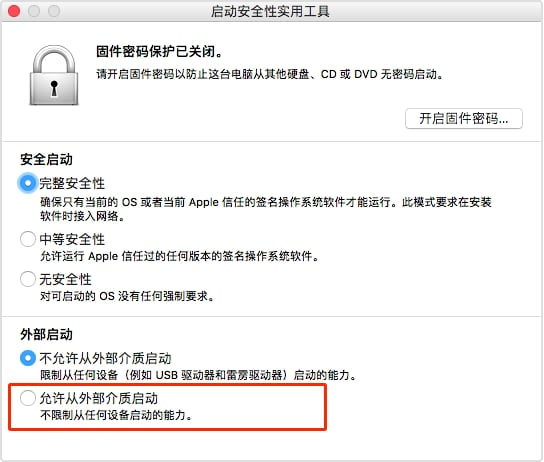
此时点选“允许从外部介质启动”，退出启动安全性实用工具。
重新启动，按住 option 键不放，选择“Install macOS Big Sur”，启动安装画面。
如果出现报错：“需要更新软件才能使用这个启动磁盘。”，参看上述第 3 条，第（2）项说明。
5. 虚拟机安装
安装之前需要准备可引导的 macOS 软件包，默认 Apple 官方提供的软件包都是不可引导的。
直接下载可启动 ISO 镜像，请访问：https://sysin.org/article/macOS-Big-Sur-boot-iso/。
本例仅测试在 VMware 软件中安装，其他虚机软件未验证，方法类似。
（1）在 macOS 中安装虚拟机
VMware Fusion 12 和 Parallels Desktop 16 for Mac 都可以完全支持 macOS Big Sur，使用可引导的 ISO，直接安装即可。
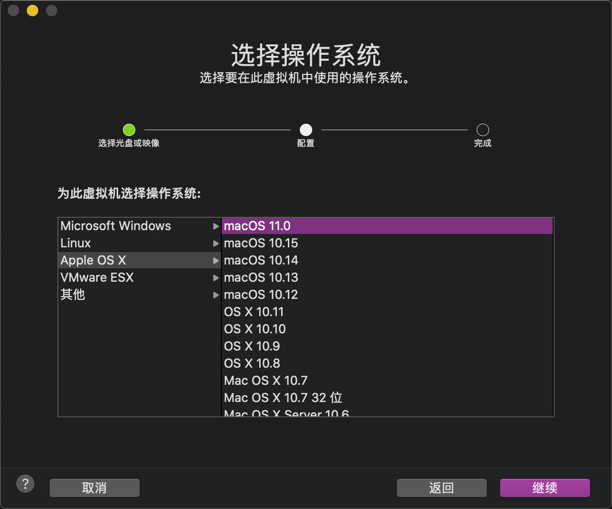
（2）在 Windows 中安装虚拟机
VMware Workstation 16 已经完全支持 macOS Big Sur（VMware 甚至提前发布了 macOS 11.1 ？），当然运行在非 Mac 硬件上需要 unlocker 才可开启。
第三方已经有修改过的 Workstation 软件集成了 unlocker，版权原因这里不列出，可自行搜索。
笔者考虑在将来发布一个 MOD，来方便解决这个问题，敬请关注本站更新。
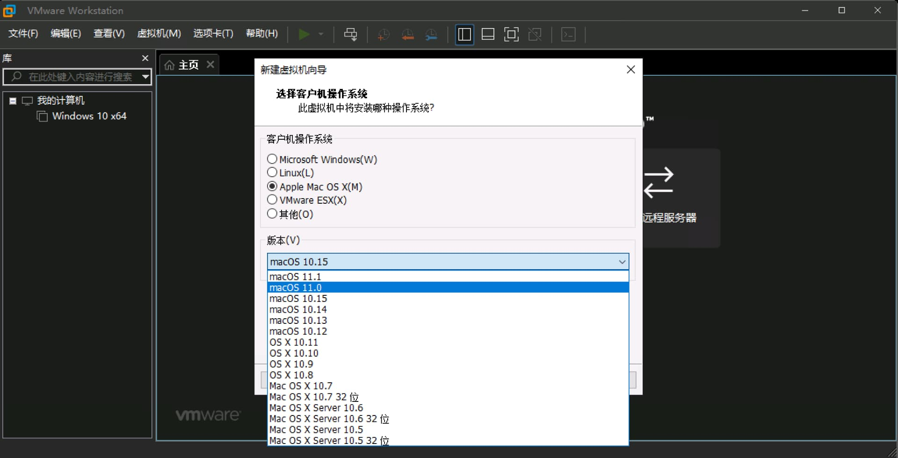
VirtualBox Version 6.1.16 (2020-10-16) 更新显示可以支持 macOS Big Sur。
（3）在物理机 ESXi 中安装虚拟机
本文落笔之时，最新的 ESXi 7.0 Update 1 官方 Guest OS 列表仅支持到 macOS 10.15，但实际上可以正常运行 macOS Big Sur，当然运行在非 Mac 硬件上需要 esxi-unlocker 才可开启。
新建 vm 时，兼容性选择 ESXi 7.0 U1，可以看到 10.16 即 Big Sur 11.0 (VMware 甚至发布了 macOS 10.17 ？)
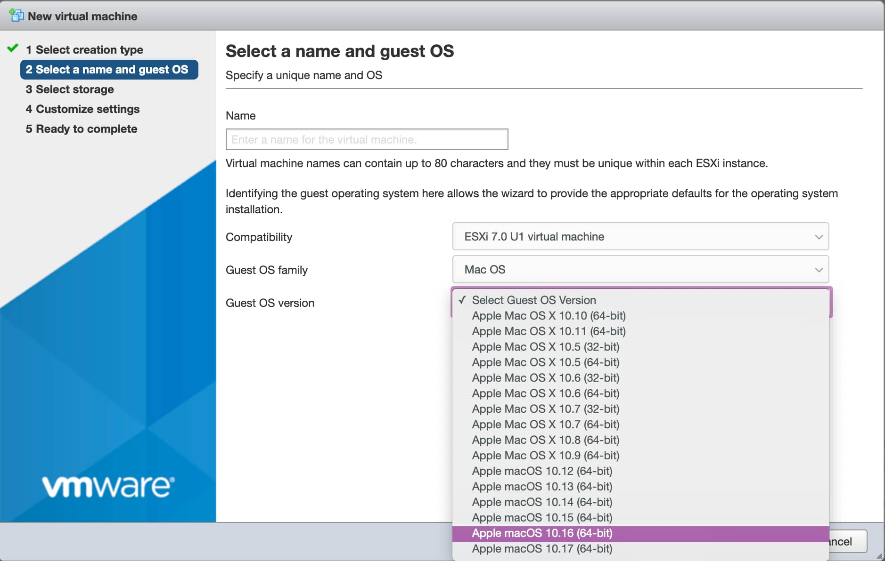
可以使用本站的 ESXi 7.0 MOD，配合以下第 6 条解决报错。安装过程这里就不在赘述。
笔者已经发布一个新版的 MOD: ESXi 7.0 U1
6. 解决 “BiErrorDomain Error 3.” 报错
在一些早期版本的虚拟化软件中，尚未完全支持 macOS Big Sur，会出现“BiErrorDomain Error 3.”报错，可参照一下方法解决。
（1）使用 VMware 安装
在 VMware 中安装 macOS Big Sur，都会提示 “BiErrorDomain Error 3.”，无法继续，需要编辑 vmx 文件添加以下配置：
1 | smbios.reflectHost = "TRUE" |
以上示例模拟的是 16-inch MacBook Pro，可以根据需要选择其他兼容的 Mac 设备。
获取 Mac Model ID，执行如下命令
1 | sysctl hw.model |
获取 Mac Board ID，执行如下命令：
1 | ioreg -l | grep board-id |
适用的 VMware 软件和版本
在以下软件和版本中测试通过
VMware ESXi 7.0.0
VMware Fusion 11.5.5
VMware Workstation 11.5.5 Windows x64
提示：不要安装自带的 VM-Tools，可能存在兼容性问题，下载 VMware Tools 11.2.0 或以上版本安装。
（2）使用 VirtualBox 安装
使用 VirtualBox 安装 macOS Big Sur，出现 “BiErrorDomain Error 3.” 报错，解决方法类似：
1 | cd “C:\Program Files\Oracle\VirtualBox\” |
（3）使用 Parallels Desktop 安装
在下面设置以下值：Hardware > Boot Order > Advanced Settings > Boot Flags.
devices.mac_hw_model="MacBookPro16,1"devices.smbios.board_id="Mac-E1008331FDC96864"
如果文章中使用的内容和图片侵犯了您的版权，请联系作者删除。如果您喜欢这篇文章或者觉得它对您有用，欢迎您发表评论，也欢迎您分享这个网站，或者赞赏一下作者，谢谢！
 支付宝打赏
支付宝打赏
 微信打赏
微信打赏
赞赏一下